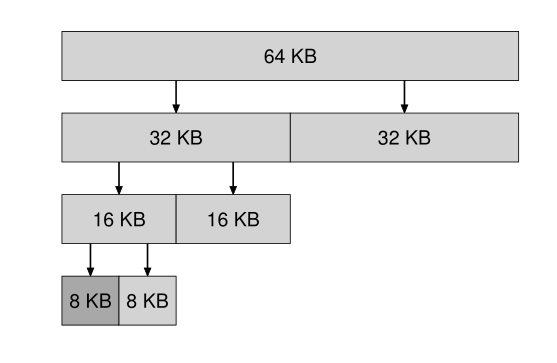

之前提及过页式存储。今天想来聊一聊段式存储。
在概念上，段式存储比段页式简单得多。后面的所有东西都建立在 base-bound 对上。换而言之，每一段都有一个 base (基底) 和 bound(上限)。
于是，我们将每一个程序分成三个段。code、heap、stack，分别对应着每一个程序需要的三部分：指令、堆、栈。当我们获得一个虚拟地址时，我们怎麽知道它对应着这三部分的哪一块？最简单的办法就是将地址的前两位用作辨识位，比如：01 代表 code，10 代表heap，11 代表 stack。
code 区，顾名思义，就是存放代码，存放指令的区域。heap 段用于存放 malloc 分配出来的数据。stack 比较特殊，它是从高地址往低地址长。
stack 这块区域用来存放变量，同时，它还负责函数调用。当发生函数调用时，要将参数，以及调用函数的地址都要存进栈里，同时，还要将寄存器里清空，装上调用函数的值。当函数执行完时，通过调用函数的地址，回到上一个函数里，同时，还要復原寄存器。
所以有时候我们不建义过份的调用函数，因爲调用函数时，面临着切换上下文等複杂的操作。这些工作实在是太浪费资源了。
当然，除此以外还有 BBS 段，data 段，不过重点不在这里。
与之而来的
在好处这点上，和分页式很像：简化链接、简化内存分配（不连续）、进程上的安全（不会干扰到其它进程）。
同时，分段之后，也便于多个进程共享代码、数据。
但是，因爲段是有 base-bound 的界线。这就会出来一个问题：太小的空间无法分给段。比如一个 700 kb 的空间，每段要 300 kb，那麽就会有 100 Kb 的空间无法使用。在多次 malloc 和 free 之后，内存空间里，就会有许许多多的碎片。
举个简单的例子：

之前给程序分配了三部分，0-10, 10-20, 20-30。在使用一段时间之后，第一段和第三段被 free。就留下了中间 10-20 的段。
在这种情况下，我想要 15 大小的空间就完全不可能了。因爲第一段，第三段都只有 10。明明剩下的空间有 20，却连 15 都分不出来。
这就是碎片。
解决碎片
虽然存在碎片的问题，但并非不可以解决。
一是通过回收聚合，二是在分配时，做点小工作，比如下面的几种办法。
最简单的解决途径：best fit、worst fit。每次选空间时，总是选最大或最小的片段，基本解决了大量的碎片问题。但选最大或最小都不得不进行一次遍历，这就是 O(n) 的问题了。
也有比较巧的办法，比如 Segregated LIsts。通过再建一条常用对象 list，将常用大小的空间留出来，如果大小符合，就先使用，否则就使用另一条任意大小的空间。
另一种办法是 Buddy Allocation。核心思想就是递归分集。

这样子，一旦分到不能装下需要的空间时，那麽就是最合适的段了。虽然有可能出现内部碎片（比如，在这里只要了 6 KB，剩下 2 KB就浪费了），但回收时，非常便利。只要看相领的段有没有被使用，使用了就暂时不回收，否则回收聚合，相当轻快。
补充完段式，关于虚拟地址的内容差不多就结束了。下次将重点转到併发上。